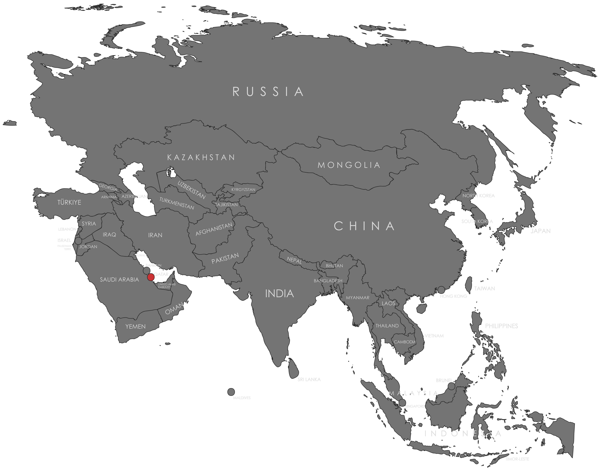

Specifications
- Local Name: قطر (Qaṭar)
- Proportion: 11:28
- Name of the Flag: Al Adaam (الأَدْعَم) or the Maroon Flag
- Adopted: July 9, 1971
Symbolism
- Maroon: The bloodshed in Qatar’s many wars
- White: Peace
- Nine white serrated edges: Represents Qatar as the ninth member of the “reconciled emirates” of the Persian Gulf
- Vertical division of maroon and white with serrated line
Colors:
Shapes / Symbols:
Meaning / Special Display
- Prominently displayed during National Day and official ceremonies to showcase unity and national pride.
- Commonly flown on government buildings, stadiums, and diplomatic events to represent Qatar’s sovereignty and historical resilience.
Description
- The flag reflects Qatar’s national identity, history of endurance, and cultural significance.
- For its citizens, it serves as a symbol of pride, sovereignty, and recognition on the global stage.

Return to Gallery